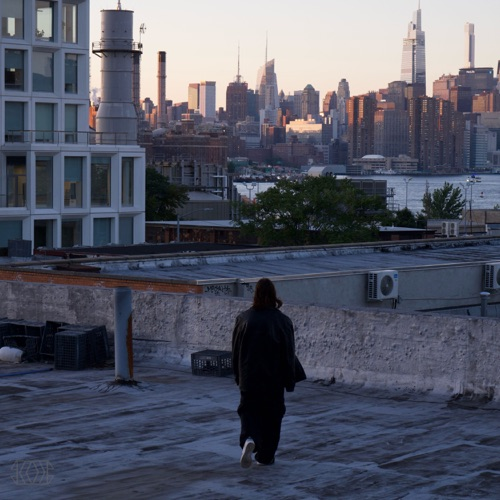
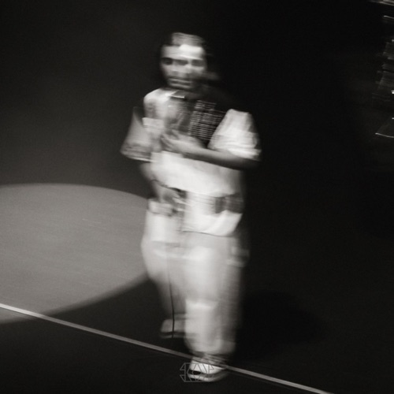
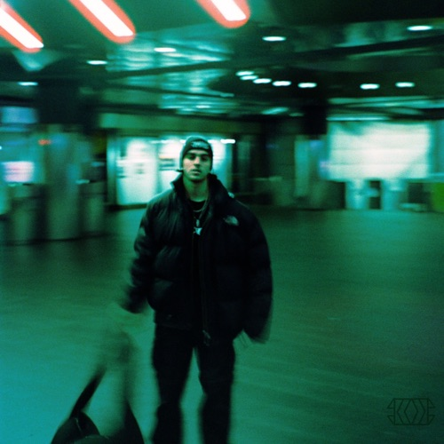
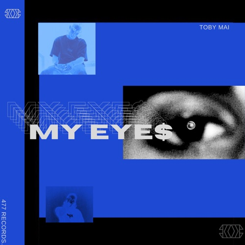

Toby Mai
Toby Mai is a producer and singer-songwriter who blends R&B and electronic music with jazz progressions and bass-heavy production. His 477 releases run from “Cities” with Two Feet through “19”.
Releases10
All 114 releases 19Toby MaiOct 2024SpotifyApple MusicYouTube
19Toby MaiOct 2024SpotifyApple MusicYouTube
Never Coming HomeToby MaiSep 2024SpotifyApple MusicYouTube Show the WorldToby MaiSep 2024SpotifyApple MusicYouTube
Show the WorldToby MaiSep 2024SpotifyApple MusicYouTube
Like I DidToby MaiAug 2024SpotifyApple MusicYouTube
BurningToby MaiJun 2024SpotifyApple MusicYouTube CrawlingToby MaiJun 2024SpotifyApple MusicYouTube
CrawlingToby MaiJun 2024SpotifyApple MusicYouTube Didn't KnowToby MaiFeb 2024SpotifyApple MusicYouTube
Didn't KnowToby MaiFeb 2024SpotifyApple MusicYouTube
MY EYE$Toby MaiDec 2023SpotifyApple MusicYouTube- $TONEDToby MaiNov 2023SpotifyApple MusicYouTube
 CitiesTwo Feet & Toby MaiSep 2023SpotifyApple MusicYouTube
CitiesTwo Feet & Toby MaiSep 2023SpotifyApple MusicYouTube